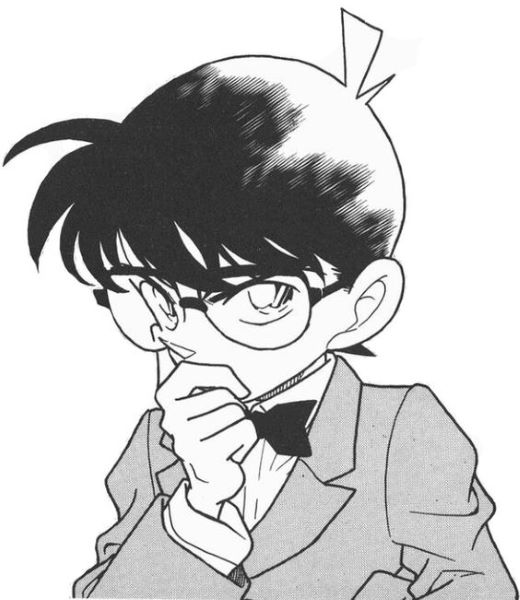
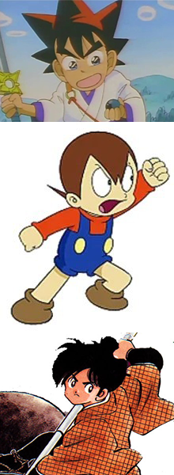
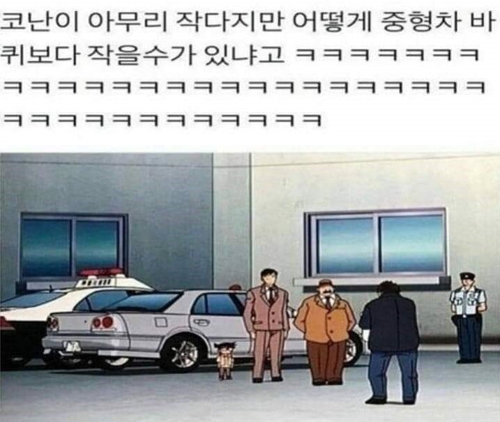

1. 코난의 디자인은 1분만에 만들어졌다.


야이바의 머리카락을 찰랑찰랑하게 만든 느낌에, 요술공주 샐리의 남동생 카브의 머리카락 꼬랑지와
일곱 빛깔 무지개의 주인공 시치미의 머리 모양을 참고하여 디자인했다.
2. 코난은 굉장히 특이한 두개골을 가지고 있다.
3. 코난의 키는 90cm 언저리이다.

그러나 점점 작아지는 듯 하다.
4. 어린이 탐정단의 두목은 놀랍게도 뭉치다.